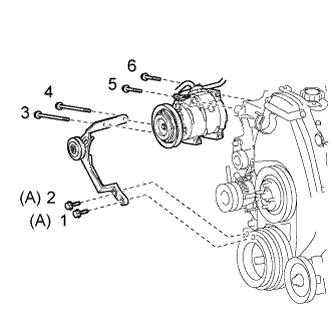
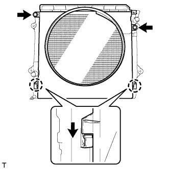
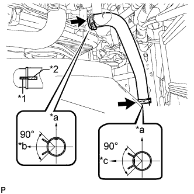
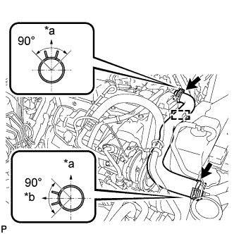

НАСОС СИСТЕМЫ ОХЛАЖДЕНИЯ > УСТАНОВКА |
| 1. INSTALL WATER PUMP ASSEMBLY |
Install a new gasket, the water pump and tension spring bracket with the 6 bolts.
| 2. INSTALL TIMING BELT |
Install the timing belt (See page Нажмите здесь).
| 3. INSTALL NO. 2 IDLE PULLEY ASSEMBLY |
Install the idle pulley bracket with the 2 bolts.
| 4. CONNECT COMPRESSOR AND MAGNETIC CLUTCH |
|  |
Temporarily install the cooler compressor with the 2 bolts.
Temporarily install the idle pulley bracket with the 4 bolts.
Tighten the 6 bolts in the sequence shown in the illustration.
Connect the wire harness with the bolt.
Connect the cooler compressor connector.
| 5. INSTALL FAN SHROUD |
Install the fan pulley to the water pump.
Install the shroud together with the coupling fan between the radiator and engine.
Temporarily install the fluid coupling fan to the fan pulley with the 4 nuts. Tighten the nuts as much as possible by hand.
|  |
Attach the claws of the shroud as shown in the illustration.
Install the shroud with the 2 bolts.
Install the fan and generator V belt and vane pump V belt (See page Нажмите здесь).
Tighten the 4 nuts of the fluid coupling fan.
| 6. INSTALL RADIATOR RESERVOIR |
Install the radiator reservoir with the 3 bolts.
Connect the radiator reservoir hose to the radiator tank side.
| 7. INSTALL NO. 2 RADIATOR HOSE |
|  |
Install the radiator hose.
| *a | Upper |
| *b | Front Side of Vehicle |
| *c | LH Side |
| *1 | Protrusion |
| *2 | Paint Mark |
| 8. INSTALL NO. 1 RADIATOR HOSE |
Install the hose clamp with the 2 nuts.
|  |
Install the radiator hose.
| *a | Upper |
| *b | RH Side |
| 9. INSTALL RESONATOR WITH AIR CLEANER CAP |
Вставьте петли крышки воздушного фильтра и шланг в корпус воздушного фильтра, а затем закрепите 4 откидных защелки.
Установите крышку воздушного фильтра и закрепите ее зажимом.
Закрепите зажим жгута проводов.
Подсоедините 2 зажима и разъем.
| 10. CONNECT CABLE TO NEGATIVE BATTERY TERMINAL |
| 11. ADD ENGINE COOLANT |
Затяните пробку сливного крана радиатора вручную.
Затяните пробку сливного крана блока цилиндров.
Медленно заполните систему охлаждающей жидкостью двигателя.
Медленно залейте охлаждающую жидкость в расширительный бачок радиатора до отметки "FULL".
Установите пробку расширительного бачка.
Несколько раз сожмите рукой патрубки радиатора № 1 и № 2, а затем проверьте уровень охлаждающей жидкости. Если уровень охлаждающей жидкости недостаточен, добавьте жидкость.
Установите на место пробку радиатора.
Запустите двигатель и прогрейте его до открывания термостата.
Поддерживайте частоту вращения коленчатого вала двигателя 2000–2500 об/мин.
Несколько раз сожмите патрубки радиатора № 1 и № 2 рукой, чтобы удалить воздух.
Остановите двигатель и подождите, пока охлаждающая жидкость остынет до температуры окружающего воздуха.
Убедитесь, что уровень охлаждающей жидкости находится между отметками "LOW" и "FULL".
Если уровень охлаждающей жидкости ниже линии "Low", повторите все вышеперечисленные действия.
Если уровень охлаждающей жидкости выше уровня "FULL", слейте охлаждающую жидкость до уровня между отметками "FULL" и "LOW".
| 12. INSPECT FOR ENGINE COOLANT LEAK |
Fill the radiator with coolant and attach a radiator cap tester to the radiator.
Warm up the engine.
Using a radiator cap tester, increase the pressure inside the radiator to 123 kPa (1.3 kgf/cm2, 18 psi), and check that the pressure does not drop.
If the pressure drops, check the hoses, radiator or water pump for leaks. If no external leaks are found, check the heater core, cylinder block, and cylinder head.
| 13. INSTALL REAR ENGINE UNDER COVER ASSEMBLY |
Install the rear engine under cover with the 4 bolts.
| 14. INSTALL NO. 1 ENGINE UNDER COVER SUB-ASSEMBLY |
 |
Hook the engine under cover to the vehicle body as shown in the illustration.
Install the 4 bolts.
| 15. INSTALL FRONT BUMPER COVER LOWER |
Install the front bumper cover lower with the 5 bolts and clip.
| 16. INSTALL UPPER RADIATOR SUPPORT SEAL |
Установите верхнее уплотнение кронштейна радиатора и закрепите его 13 фиксаторами.